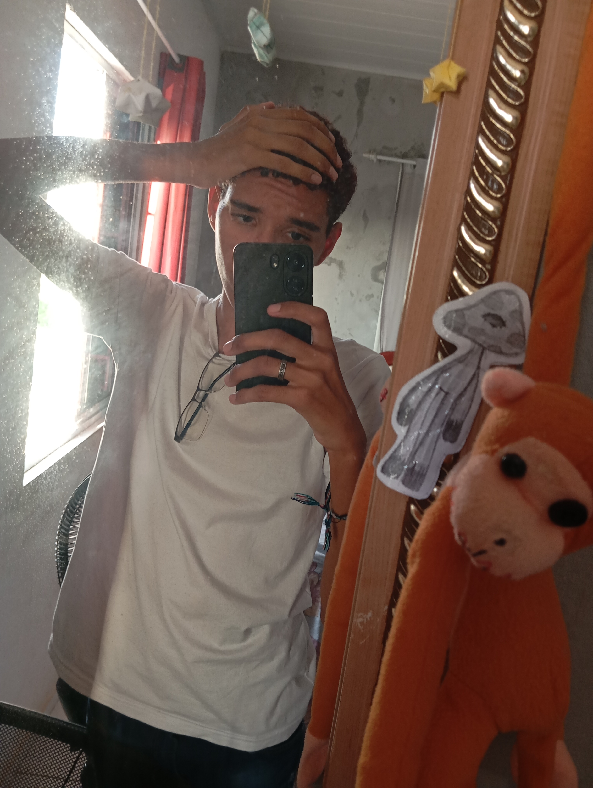

Quem eu sou
Me chamo Warley Nogueira, tenho 15 anos, sou técnico em Informática e estudante da EEEP Jeová Costa Lima. Escolhi o curso de Informática pois desenvolvi interesse por programação assistindo a vídeos de criação de jogos para Roblox. Comecei a ter um contato maior e mais experiências nesta área após ingressar na minha atual escola.
As áreas da tecnologia que mais me atraíram foram Design de Sites e Back-end. Atualmente, nas aulas de Informática, estou a aprender a programar a estrutura base de um site. Embora não pretenda seguir carreira na área de Informática, pretendo utilizar todos os aprendizados a meu favor.
Pretendo fazer cursos de música, dança e maquilhagem, pois o meu objetivo é ser cantor, drag queen e ter reconhecimento pelo meu trabalho artístico.